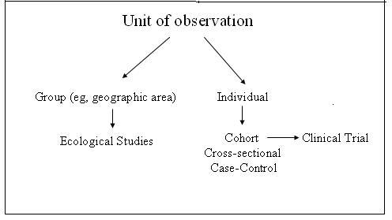

Unit of Observation
Lead Author(s): Jeff Martin, MD

Study design begins with the unit of observation( note diagram).
Either the observations are:
- Made on individuals
- Grouped summaries of measurements made on individuals (usually the mean or median value of a measurement)
- Measurements which apply to a group of individuals (such as air temperature, water supply, etc).
Any set of measurements on individuals can be converted to a group measure by taking the mean, etc., but group means cannot be converted meaningfully to individual measurements since each person will get the same value.
Individual measurements are the gold standard, but ecological studies, the common name for studies that use group measurements, have a role. Associations observed between group variables have often led to individual level research. Some types of data are only available at the group level. Some variables only apply to geographic areas; for example, air quality.
The danger in looking at associations between variables at the group level is that the association may not hold at the individual level. This is known as the ecological fallacy.
Note that in our schematic above a clinical trial is shown as a special case of a cohort study. A trial is a cohort study conducted as an experiment in which the exposure is randomly assigned rather than just observed.